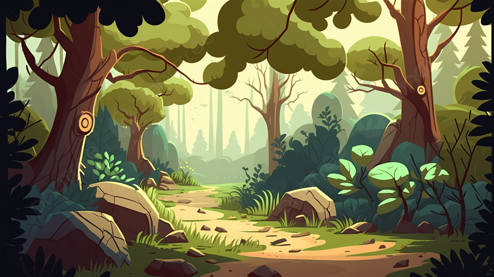

Esse final de semana estou indo para casa dos meus avós junto com meus pais, la tem uma floresta enorme e quero muito explora-lá, só não sei se vou explorar de imediato ou se espero o dia seguinte.
Decidi ir logo para a floresta, cheguei na casa de meus avós, tomei um café que estava delicioso e logo ja fui indo, antes de entrar na floresta senti um calafrio, mas não deixei que isso me abalasse, vi um macaquinho filhote que começou a correr quando percebeu a minha presença.
Vou seguir o macaquinho, quem sabe ele me apresenta sua familia né, oh meu deus perdi ele de vista e agora??? Pra qual lado eu vou?